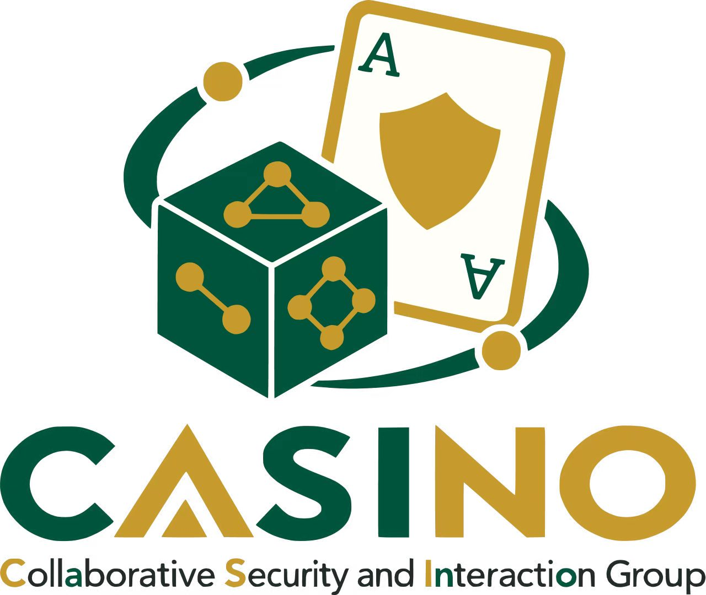

Usable Security
& Privacy
Designing safeguards people can understand, adopt, and trust.
View direction ↗
Website direction study · 2026
Collaborative Security & Interaction Group
新 logo 同时包含「可信赖的安全」「开放的协作」「实验性的互动」。下面三个方向分别放大其中一种气质， 但都使用同一组品牌色与相同的信息骨架。
Logo palette
深绿传达可靠，金色提供识别度，暖白降低传统“网络安全蓝”的距离感。
Collaborative Security and Interaction Group · University of Macau
We study how people and intelligent systems negotiate trust, privacy, and agency—then build interactions that make digital life safer.
Explore our research ↓01 / Research
从旧站已有方向出发，把研究组织为三个更容易理解、也更适合持续扩展的主题。这里是方向级描述，不虚构具体项目。
Designing safeguards people can understand, adopt, and trust.
View direction ↗Examining agency, collaboration, and responsibility with AI.
View direction ↗Building safer systems for finance, learning, and communities.
View direction ↗02 / Selected work
首页只放 1 个重点项目，用一句人能读懂的话解释问题，再连接到论文、原型与媒体材料。
Placeholder project story ↗[ COLLABORATIVE SECURITY + INTERACTION ]
Investigating the shifting boundaries between people, intelligent systems, and digital security.
01 // ACTIVE DOMAINS
HUMAN FACTORS / PRIVACY / BEHAVIOR
↗AGENCY / COLLABORATION / GOVERNANCE
↗BLOCKCHAINS / RISK / RESILIENCE
↗ACCESS / EDUCATION / COMMUNITIES
↗02 // LATEST OUTPUT
DEMO LAYOUTReplace with a real flagship project, paper, or system.
READ SIGNAL ↗Collaborative Security & Interaction Group
HELLO, WE'RE CASINO.
What we care about
Bring your perspective.